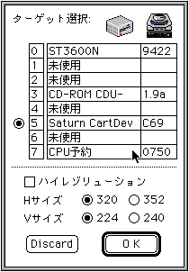
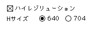
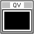
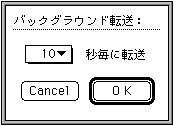

★Graphic Tools Guide
★Quick Viewerユーザーズマニュアル
★Graphic Tools Guide
★Quick Viewerユーザーズマニュアル
Quick Viewer
ユーザーズマニュアル
■リリースノート
- ●3.1J→3.17J バージョンアップ情報
- いくつかの障害を解消しています。
- サターンカートリッジ デベロップメントシステムに対応しました。
- ●制限事項
- Version 3.17Jは、以下のセガ開発ターゲットに対応しています。
- サターンターゲットModel-S グラフィックスボックス
- サターン カートリッジ デベロップメントシステム(通称、CartDev「カートデブ」)
- 接続の際の注意事項は、ターゲット付属のマニュアル等を参照してください。
- 開発ターゲットを使用した、他のアプリケーション(「Quick Viewer」のコピーも含む)が起動していた場合、
正常な動作は保証できません。「Quick Viewer」を利用する場合は、必ず、他のアプリケーションが開発ターゲットを使用していないことを確認するようにしてください。
- また、「Quick Viewer」使用中に開発ターゲットに対応した他のアプリケーションを起動する場合は、ターゲットに接続することのないように注意(「ターゲット選択」ダイアログで［Discard］ボタンをクリック)してください。
ただし、複数の開発ターゲットが異なるIDで接続されている場合は、この限りではありません。
- ●注意事項
- 自動転送間隔を短くすると、Macintoshの処理が重くなるので注意が必要です。
- ハイレゾリューションモードは、サターンCartDev使用時のみ利用できます。
■はじめに
- 『Quick Viewer』は、Macintoshのモニタ画面を取り込み、セガ開発ターゲットを使用して表示するアプリケーションです。
Macintoshのあらゆるアプリケーションの画像をファイル等を介さずに、即座にターゲットのTV画面で表示を確認することができます。
■制限事項
- Version 3.17Jは、以下のセガ開発ターゲットに対応しています。
- サターンターゲットModel-S グラフィックスボックス
- サターン カートリッジ デベロップメントシステム(通称、CartDev「カートデブ」)
- 接続の際の注意事項は、ターゲット付属のマニュアル等を参照してください。>/P>
■基本操作
- アプリケーションを起動すると、以下のダイアログが表示されます。接続したい開発ターゲット及び表示モードを設定して、「O K」をクリックします。

- サターンCartDevが接続されていた場合、ハイレゾリューションボックスが有効になります。ハイレゾリューションモードを選択するとHサイズの表示が各々2倍になります。

- ターゲットボックスとの通信が成功すると、以下のウインドウが表示されます。

- ウインドウ内をクリックすると、Macintoshモニタ画面上の取り込み領域内の画像を、ターゲットのTV画面に表示します。
- 取り込み領域を変更したい場合は、以下の手順で操作します。
- マウスポインタをウインドウ内から外へドラッグします。
- ターゲットTV画面サイズのマーキーが表示されるので、そのまま表示したい位置に移動します。
- マウスボタンを離すと、取り込み領域が設定されます。
- 表示操作をバックグラウンドタスクを利用して、自動的に行う(自動転送)こともできます。以下の手順で操作します。
- 「ファイル」メニューの「自動転送設定」を選択すると、下記のダイアログが表示されます。

- ポップアップメニューで、自動転送する間隔を選択します。
自動転送間隔を短くすると、Macintoshの処理が重くなるので注意が必要です。
★Graphic Tools Guide
★Quick Viewerユーザーズマニュアル
Copyright SEGA ENTERPRISES, LTD., 1997